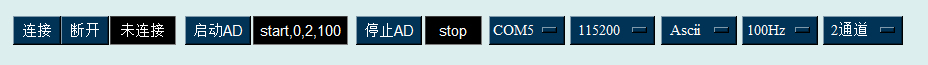
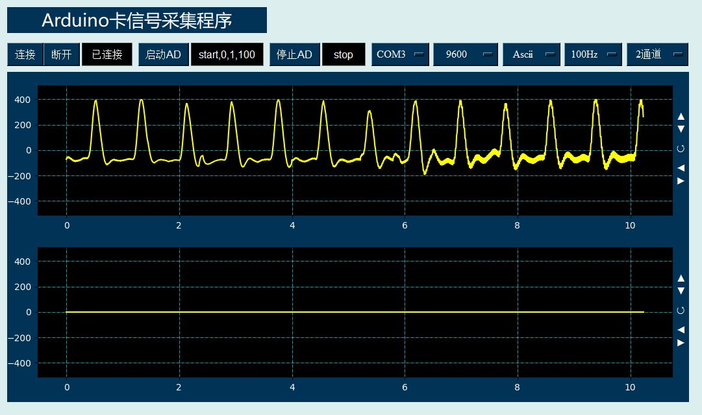

Arduino卡采集器控件是通过串口通讯，与Arduino卡就行连接，形成一个4通道的AD采集器；并可通过回调函数形式返回当前采集的传感器信号，用户可编程定义后续的信号显示和信号处理操作。其图形显示效果如下：

具体应用方法可参考软件包中的Arduino卡信号采集程序(DRVIExample_Arduino)代码：

在Python程序GUI界面中创建一个Arduino卡采集器控件的命令为:
hl=drCOM.DRArduinoAD(win,x,y,w,h,cb1,cb2,cf1,ch2,channels,Fs,BlockLength,fontsize)
其中hl是创建时用户设定的变量名。Arduino卡采集器控件可以通过回调函数绑定的方式将采集到的信号数据传递给绑定的回调函数，格式为：
hl.addCallBack(setADData)
被绑定的回调函数是一个用于接收最多4通道采样数组的函数，收到的是当前信号的采样频率，通道数和信号数组，其函数形式为：
def setADData(Fs,CH,array1,array2,array3,array4):
通过回调函数绑定方式，就可以将采集的数据传递到回调函数中。
.